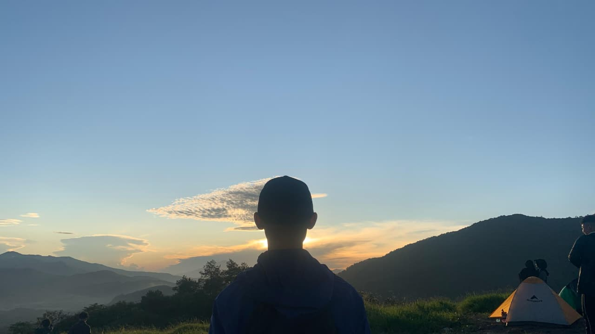

Mitos & Kepercayaan Lokal
Nama "Pangradinan"
Secara etimologi Sunda, kata ini sering dikaitkan dengan kata Radin atau Paradin, yang bisa diartikan sebagai tempat yang bersih atau tertata.
Situs Ziarah
Di sekitar kawasan puncak, terdapat beberapa area yang dianggap keramat atau merupakan petilasan. Masyarakat setempat sangat menjaga kesucian tempat ini, sehingga pengunjung sangat dilarang untuk berbuat tidak sopan atau merusak lingkungan.
Pantangan
Seperti gunung pada umumnya di Jawa Barat, ada mitos untuk tidak berbicara sombong atau berteriak-teriak tidak jelas agar tidak "disapa" oleh penunggu tak kasat mata.
Kembali ke Beranda